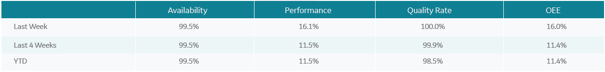

<!-- Filter Content -->
<div class="row vs-filter" data-ng-style="oeeAllValueStreamsObj.filter.style">
    <div class="col s12 m12 l12">
        <div class="col s3 m4 l5">
            <select class="right vs-filter-sort-by" data-ng-model="oeeAllValueStreamsObj.filter.selectedOptions" data-ng-change="update()" data-ng-options="item for item in oeeAllValueStreamsObj.filter.sortByOptions" style="background-color: lightgrey;border-radius: 5px">
                <option style="display:none" value="">Site Code</option>
            </select>
        </div>
        <div class="col s3 m4 l5">
            <select class="right vs-filter-sort-by" data-ng-model="oeeAllValueStreamsObj.filter.selectedOptions" data-ng-change="update()" data-ng-options="item for item in oeeAllValueStreamsObj.filter.sortByOptions" style="background-color: lightgrey;border-radius: 5px">
                <option style="display:none" value="">Machine Group</option>
            </select>
        </div>
     
    </div>
</div>
<!-- Filter Icon -->
<div class="row vs-filter-icon" data-ng-style="oeeAllValueStreamsObj.filterIcon.style">
    <a href="javascript:void(0)" data-ng-click="toogleFilter()">
        <i class="fa fa-filter" data-ng-hide="oeeAllValueStreamsObj.filter.show" aria-hidden="true"></i>
        <i class="fa fa-times-circle" data-ng-show="oeeAllValueStreamsObj.filter.show" aria-hidden="true"></i> &nbsp;
        <span data-ng-bind="oeeDashboardObj.filter.show ? 'Close' : 'Filters'"></span>
    </a>
</div>

<div class="s12 m12 l12" id="Table">

</div>